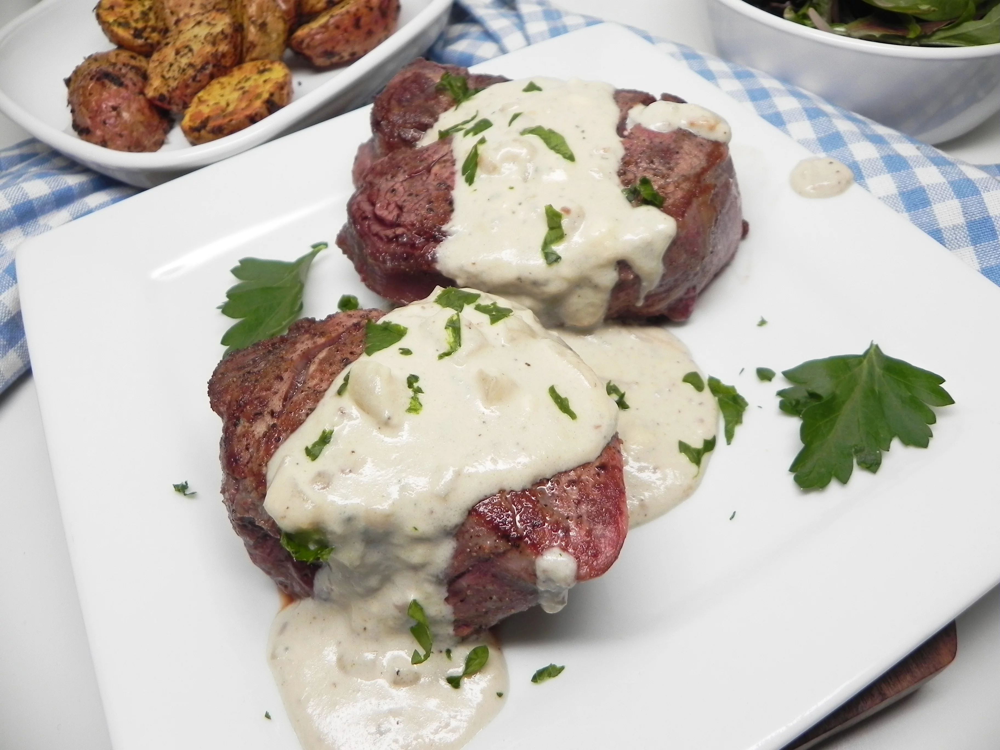

Filet Mignon

Description
Yummy filet mignon recipe for two people
Ingedients
- 2 (6 ounce) filet mignon steaks
- 1 teaspoon olive oil
- salt and ground black pepper to taste
- 1 tablespoon butter
- 1 shallot, minced
- 1 teaspoon minced garlic
- 1 cup heavy cream
- 4 ounces crumbled Gorgonzola cheese
- salt and ground black pepper to taste
Steps
- Preheat the oven to 500 degrees F (260 degrees C). Place a large, oven-proof skillet in the oven as it preheats.
- Bring steaks to room temperature. Rub with olive oil and season generously with salt and pepper.
- Remove the hot skillet from the oven carefully and place it on a burner set to high heat. Leave the oven on.
- Place steaks into the dry pan immediately and sear, turning with tongs, 1 to 2 minutes on both sides.
- Transfer the pan back into the preheated oven and cook until desired doneness is reached, 3 to 5 minutes. For medium doneness, an instant-read thermometer inserted into the centers should read 140 degrees F (60 degrees C). Transfer steaks to a warm platter and tent loosely with foil. Let rest for 5 to 10 minutes; the steaks will continue to cook during this process and the internal temperature will rise 5 to 10 degrees.
- Meanwhile, heat butter in a medium saucepan over medium heat. Add shallot and garlic and saute until shallot is tender, 5 to 7 minutes. Pour in cream; let cook until reduced by half, about 10 minutes. Turn heat to low and add Gorgonzola cheese. Let cheese melt; season with salt and pepper. Serve sauce with steaks.